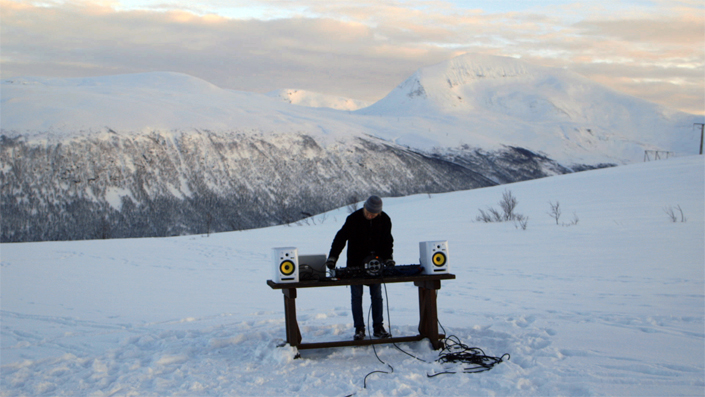

Blinded by the Northern Lights of Norwegian Disco

The opening minutes of Northern Disco Lights are awash with lush imagery: Scandinavian coastlines, snowcapped mountains, and Norway’s mesmerizing Northern Lights, which pulse through the sky like some kind of sci-fi enigma. The remote city of Tromsø, 350 kilometers north of the Arctic Circle, is one of the best places to view these lights, and it’s here that the documentary’s narrative begins.
Northern Disco Lights takes us way back to the dawn of dance culture in the late ‘80s, the same time when budding rave scenes were flourishing across America and Europe. Tromsø had its own collective of ravers who were setting up pirate radio stations, throwing parties, and building synthesizers literally from spare parts. This was the genesis of what would later become known as “Norwegian Disco,” a sound that rivals Detroit Techno and Chicago House as one of the most distinct to emerge from dance culture.
Fittingly, though, the doc quickly leaps into the present, setting down under the strobe lights of the dancefloor with a soundtrack provided by Lindstrøm, one of the leading lights of the Norwegian disco scene since his cosmic ‘05 smash “I Feel Space” helped propel it into the global consciousness. Featured here is last year’s hit record “Closing Shot”—a gorgeous composition brimming with disco euphoria and cosmic psychedelia—which helped keep Norway in the zeitgeist the past 12 months.
“The parties were happening underneath the radar… which was mirrored in what was happening in all sorts of little pockets of rave around the world.”
Pete Jenkinson, one of the directors of Northern Disco Lights, points to the geographic isolation of Norway as one of the defining factors in the sound’s development, a factor even more stark in the days prior to the digital era.
“There’s a couple of interviewees in the film who note that the movement actually began before the internet,” he says. “They hadn’t really gotten into synthesizers until the late ‘80s. So, a lot of the influences brought to the scene came directly from actual geographical trips to London. They brought records, took them back, played them on the radio, and then it just kind of spread.”
Jenkinson spent more than two years putting together the film, which saw him interviewing more than 50 artists and assorted music industry figures. Significantly, he’s also one of the founders of iconic British label Paper Recordings, which has released quality house music since 1994 and was one of the first labels to catch on to the sounds coming from up north. He emphasises the uniqueness of the Norwegian Disco sound, yet he also points out that the country’s early scene shared a similar DNA with the rave scenes blossoming elsewhere.
{kind=link}

“Early dance music was spread mainly through pirate radio, really. It was the most effective way to send beats around across the airwaves. And the parties were happening underneath the radar. In the film, there were a lot of references to warehouse parties in Bergen and Tromsø when it started, which was mirrored in what was happening in all sorts of little pockets of rave around the world.”
Early pioneers like Biosphere are pointed to frequently throughout Northern Disco Lights as early and hugely influential pioneers—along with Tore Andreas “Erot” Kroknes, who tragically passed away in 2001. However, it was around a decade ago that the sound really took off internationally, propelled by the success of Lindstrøm—as well as his oft partner-in-crime Prins Thomas, who founded the influential Full Pupp record label. Todd Terje was another seminal name to emerge from this era, ruling the clubs then with sublime anthems like “Balearic Incarnation” and enjoying his biggest success to date with 2014’s It’s Album Time.
There was something about the Northern sound that was unmistakable. Heavily influenced by the euphoric escapism of the disco that directly preceded rave culture, it also had a certain cosmic psychedelia that saw many of the club records setting sail on trippy, spacey journeys; this was even more pronounced when the likes of Lindstrøm released albums. Where You Go I Go To in 2008 notoriously featured just three epic tracks, sonic adventures that varied from 10 minutes to a full half hour.
“A lot of that was just down to pure innocence and naiveté and pure invention… It’s so multifaceted that it’s hard to just pinpoint the one influence.”
“They listened to disco and dance, and they just basically created their own version of it,” says Jenkinson. “A lot of that was just down to pure innocence and naiveté and pure invention, really. It was all about ideas; it wasn’t really about equipment, because there wasn’t much hardware about in the early days. It’s so multifaceted that it’s hard to just pinpoint the one influence. It’s very electronic and sample-led. There’s a lot of disco cuts and beats thrown in there. It’s basically their own unique version of disco that they created, fused in with this adventurous approach that produced all sorts of psychedelic compositions that were completely out there, where sonically, they mirrored the big progressive rock bands of the ‘70s.”
A recurring voice in the documentary is Bjørn Torske, another stalwart who was around since the early days, and who’s described by his contemporaries as one of the “godfathers” of the Norwegian sound.
“Where many other scenes tend to narrow it down to a very recognizable (and predictable) sound, a lot of the Norwegian stuff seems to be more exploring into ‘unknown’ territory and weirdness,” Torske says. “It was [early producer] Erot who described it as always including something off-key or offbeat, underlying sounds or melodies that would disturb the order of perfectly programmed music and break the repetition. This ethos is undoubtedly a heritage from early disco music, which was mostly recorded live, which spawned house throughout the ‘80s and was in essence was kept alive into the ‘90s.”
Torske also vouches for the legitimacy of what’s made it onscreen with Northern Disco Lights: “The history and material the filmmakers are digging into, there isn’t much original documentation to be found except the music itself. With that in mind, I’m quite impressed with the feat and the fact that it gives such a vivid impression of how our little music scene developed.”
Northern Disco Lights will be released April 29, 2017. The soundtrack by Mental Overdrive also drops on the same day. And for Record Store Day, keep an eye out for Lindstrøm “Closing Shot” & Erot “Song For Annie” 7-inch.
The above mix is by DJ Vidar (aka Vidar Hanssen from Troms), a collector and an enthusiast for Norwegian electronic music. He runs the label Beatservice Records, known for a.o. the Norwegian house compilation series ‘Prima Norsk,’ and plays regular Prima Norsk DJ shows with Norwegian house only.
Ralph Myerz & The Jack Herren Band “Nikita” (2003)
Röyksopp “Eple” (2001)
Prins Thomas “Mammut” (2009)
Illumination “She Got Soul” (1999)
Biosphere “Novelty Waves” (1994)
Lindstrom “I Feel Space” (2005)
Mental Overdrive “Cheese Royale” (1999)
Sternklang “Beautiful Thing” (2002)
Bjørn Torske “Oppi Ura” (2001)
Andre Bratten “Trommer & Bass” (2015)
Kohib “Percalaise” (2014)
De Fantastiske To “Folk & Ferie” (2015)
Addvibe “Feels So Good 2nite” (2000)
Todd Terje “Inspector Norse” (2012)